2. Travel through the northwest of Spain
2. Travel through the northwest of Spain
August 18 to 22, 2021
Day 2, Lugo bajo
August 19, 2021
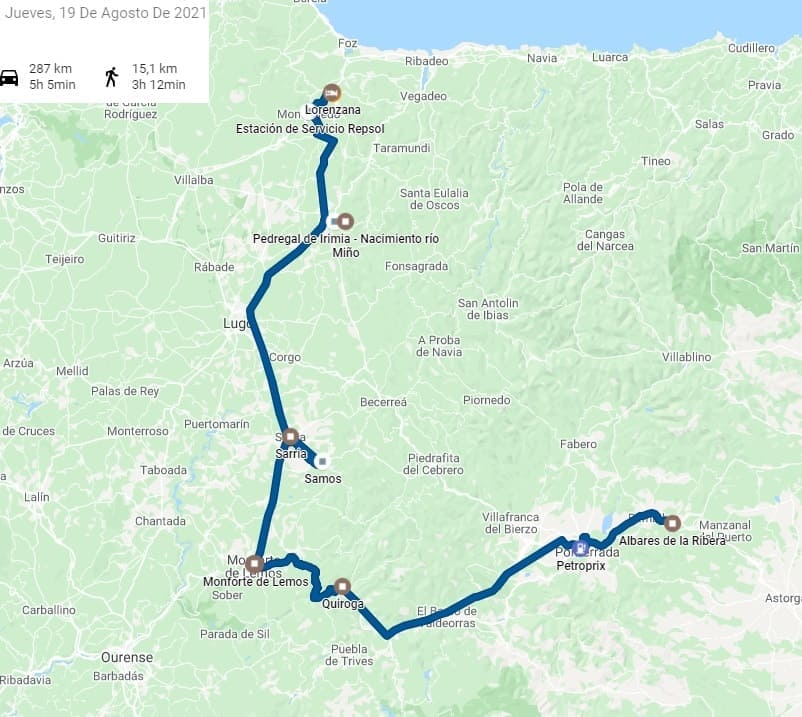


36. Quiroga
36. Quiroga
The next visit will be to the northwest, first stop in Quiroga where I go to the recently restored and expanded geological museum where you can see the skeleton of a cave bear and mammoth bones found in the area . In addition to information on the location of the main surveys.
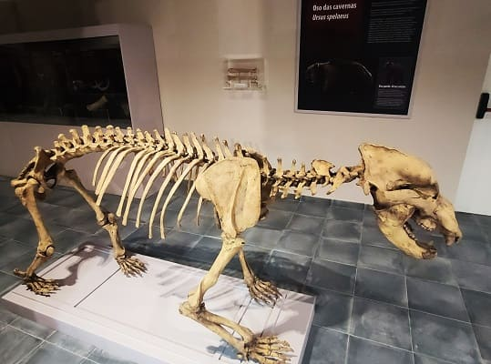

37. Monforte de Lemos
37. Monforte de Lemos
Then I go to
Monforte de Lemos. This city was historically born at the top of the mountain where the national hostel is located today. It is precisely the time in which it was built when the city began to flourish. The monastery of San Vicente del Pino dates from the beginning of the 12th century when Count Fruela Díaz and his wife ordered the creation of a new town. Those were the founders of Monforte de Lemos. The wall and the keep were built later around the 13th century.
The best thing about this location are the excellent views of the city. Here two images of the national tourism parador.
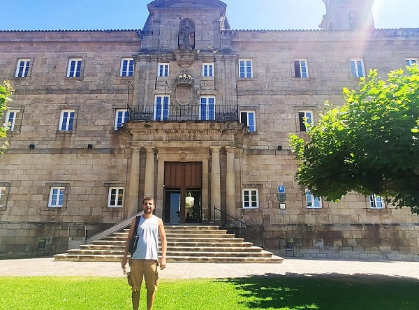
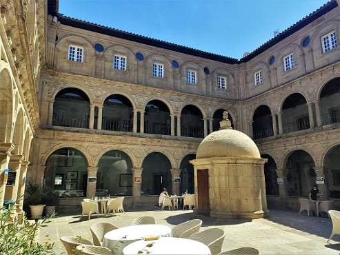
If I walk through the streets you can see the lines of a northern Galician town. The Cabe River crosses the city and has several bridges in its path, among which
the Old Bridge stands out, which, although it is nicknamed a Roman bridge, was built in the 14th century.
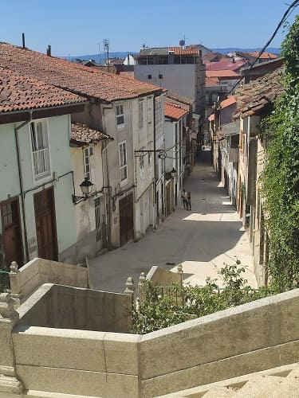
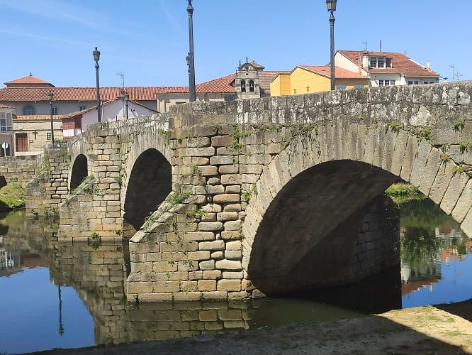
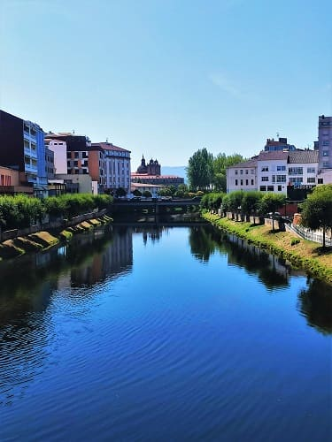
Another notable building in this town is
the palace of the Counts of Lemos and the current College of Our Lady of Antigua. It has Herrerian lines and is nicknamed by many as the Gallego Escorial. It was first run by Jesuits, and after their expulsion by Piarist Fathers. The property also passed through different noble families, beginning with the house of Lemos to move on to the house of Alba. The College has a church inside with extremely important altarpieces. Also for palatial
style rooms
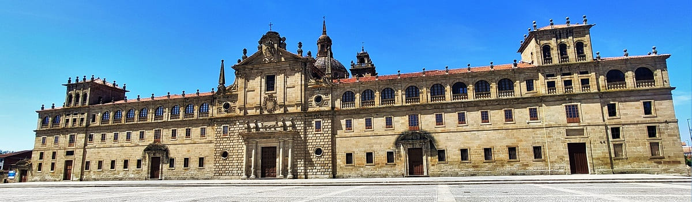
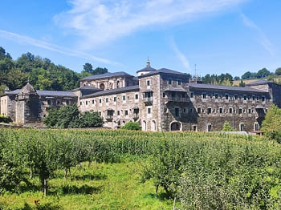
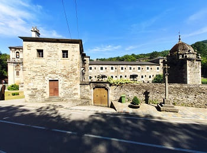
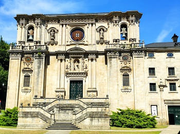

38. Samos
38. Samos
I continue along the road to the north and arrive at
Samos, where one of the largest monasteries on the entire route of the Camino de Santiago is located. Surrounded by great nature and with numerous hiking trails around.
The Monastery of San Julián de Samos, founded in the 6th century, belongs to the Benedictine order and is in the municipality of the same name, in Lugo, Galicia, Spain.
It was rebuilt in the 8th century, the King of Asturias would find refuge and from the 10th century the bishop would expel the monks who inhabited it, being those who would call themselves Counts of Monforte the ones who would bring new monks to occupy it, becoming a monastery of the order of the Cluny. In the 15th century is when it acquired more importance, above all because it was a step on the road to Santiago and the reconquest of the peninsula was almost finished.
It has an 18th century church and two cloisters. A small one built in the 16th century and a large one that is the one that is famous, being one of the largest cloisters in Spain. It also highlights its library of more than 25,000 volumes. The monastery was a Theology and Philosophy school and today it currently functions as a hostel on the Camino de Santiago.
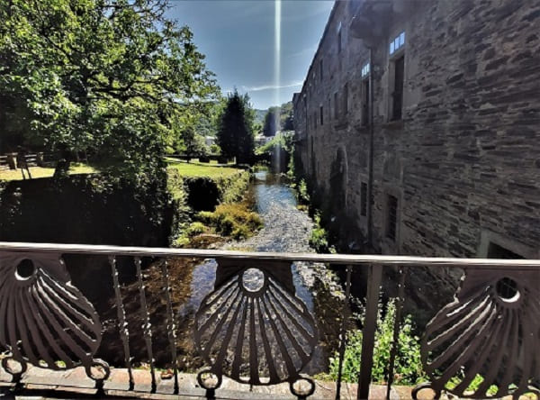
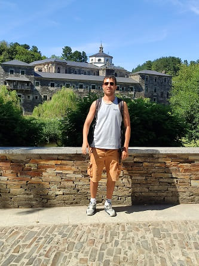
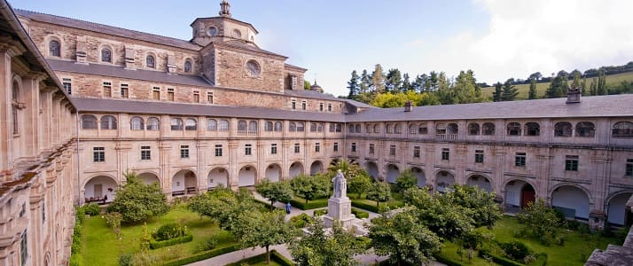


39. Sarria
39. Sarria
Next to this monastery is the city of
Sarría, which is just the next point on the Camino de Santiago.
This city is the most important of a small region of Lugo. The foundation of the city would be like a small village in the 18th century. With the prosperity of the Camino de Santiago, monasteries would be founded and would gain importance. Inns and hostels for pilgrims would also arise that continue to operate today.
It has two churches, the church of El Salvador and the church of Santa Marina from the 13th century.
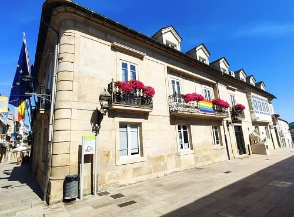
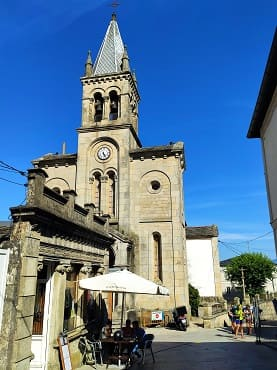
The most important building today is
the monastery of La Magdalena which functions as a hostel. Romanesque monastery from the 12th century that has changed over time. Modified in the 19th century that gives it that new interior look.

40. Meira
40. Meira
After seeing this town I continue north to
Meira . In this city, the town hall square stands out, which is next to the church of Santa María. There was a monastery on the same site that was lost and the church is from the 12th century in the Romanesque style and from the Cistercian order.
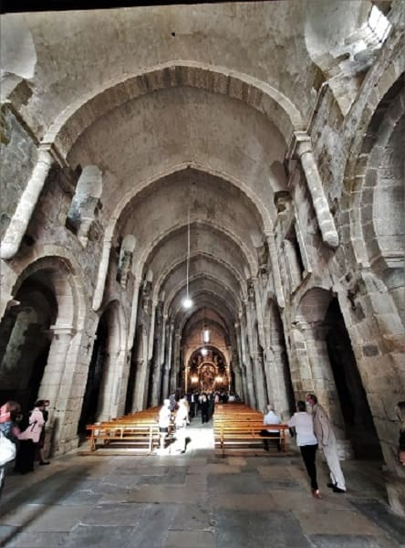
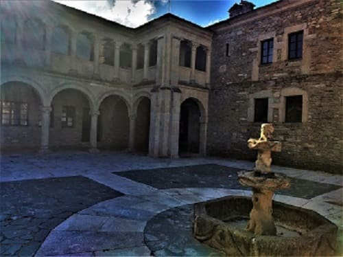
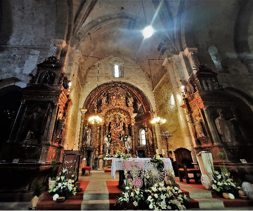
Very close to this town is
the source of the Miño river, which is nothing more than a large number of rocks in front of very fertile land where a large number of flowers abound, as we see in the image.
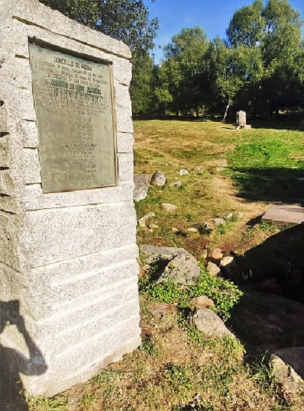
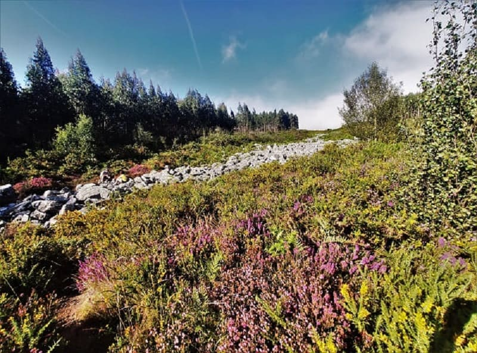


41. Mondoñedo
41. Mondoñedo
Following a rather difficult country road through the mountains, I arrive in the afternoon at
Mondoñedo, one of the towns with the longest ecclesiastical tradition, with its ancient cathedral made entirely of rock in a style very close to the cathedral from Santiago.
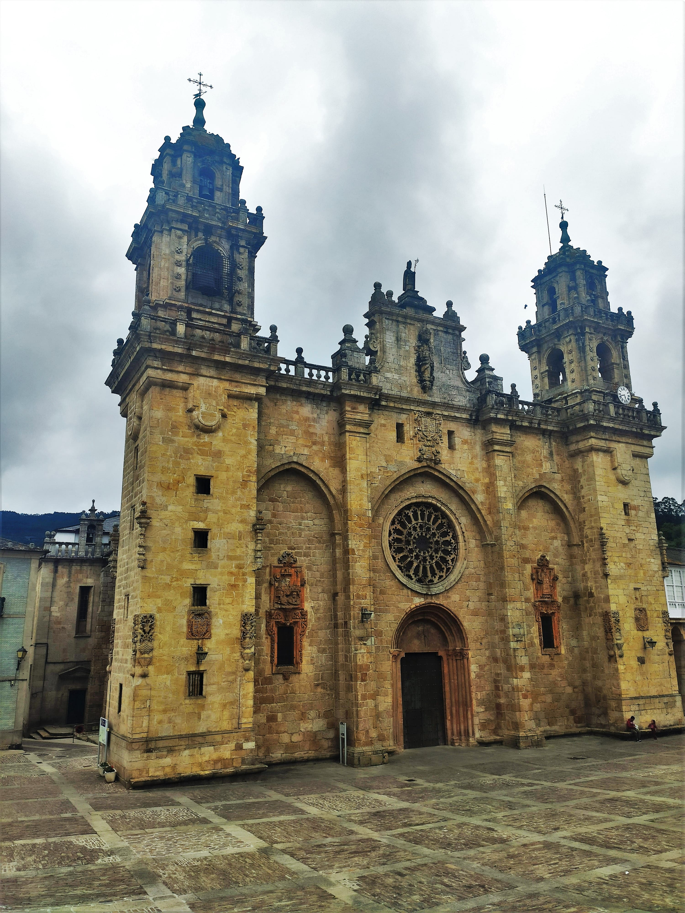
The old town, declared a Historic-Artistic Site in 1985, has as its center the Plaza de la Catedral, a national monument built in the 13th century and where all the streets of the town converge. In 2015 UNESCO declared it World Heritage Site as well as the road to the north of Santiago that crosses the town. Other buildings in Mondoñedo stand out, such as the Santuario de los Remedios, built in the mid-18th century, the Hospital de San Pablo, built at the same time, the Convento de la Concepción, the Church of Santiago, the Monastery of Los Picos and the Real Conciliar Seminary of Santa Catalina from the 18th century.
The architectural landscape of the town is characterized by the tile roofs of the houses that end in typical stone peaks called "ameas" to protect against the wind. The city of Mondoñedo is one of the points through which the Camino de Santiago passes, being a resting place for pilgrims. It appears historically linked to the diocese of Britonia -very possibly encompassing lands between the Sierra del Gistral and the Navia river gorge- and with the arrival of the Breton population from the island of the same name in the 5th century. Among these, the figure of Bishop Mailoc stands out.
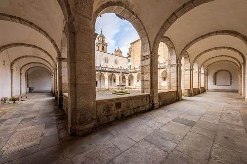
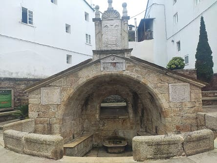
The valley in which the municipality is located preserves numerous archaeological remains such as dolmens, forts, such as Zoñán and petroglyphs, which show that settlements already existed in it since the Neolithic.
Mondoñedo Cathedral was built by Bishop Martiño between 1230 and 1248 and preserves the primitive Romanesque door. It has an ogival rose window from the 13th century; the baroque stained glass windows, the towers and the pediment are from the 18th century, commissioned by Bishop Munoz y Salcedo. Inside, the apse is in the Romanesque style and becomes ogival as the naves advance. Below the two 8th-century organs are 14th-century wall paintings; some represent the Decapitation of the Innocents and the other dinners of the life of San Pedro. The "Santos San Cristóbal" cathedral museum, founded in 1969, contains archaeological pieces from the cathedral and neighboring parishes, carvings, paintings, engravings, altarpieces and other liturgical objects.
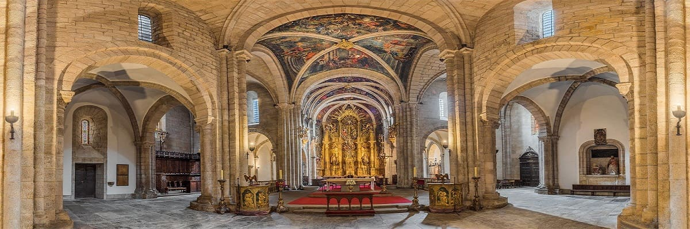
Attached to the Cathedral is
the Episcopal Palace, and in front of it the arcades of the beautiful Plaza de España, where the relaxed seated statue of Don Álvaro Cunqueiro can be found. Nearby there are several hostels that claim to be one of the best on the northern Camino de Santiago.
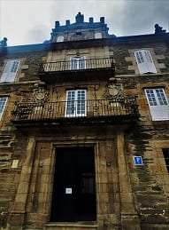
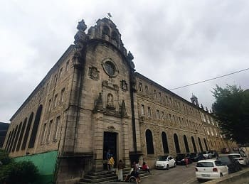
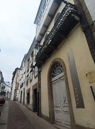
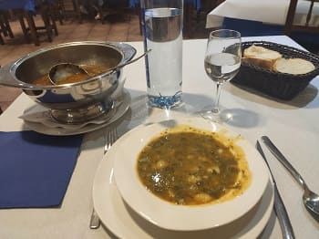
Apart from the cathedral there are
numerous important churches, the Hospital de San Pablo, the Santuario de los Remedios, the manor house of alderman Luaces, the new and old Town Hall, the Santa Catalina Seminary, different chapels, the convent de la Concepción and the Episcopal Palace.
Finally I will arrive at Lorenzana.
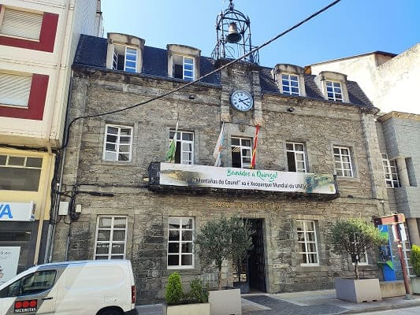
Archaeological museum and Plaza Mayor.
5
Palace of the Counts of Lemos and Nuestra Sra Antigua School, 16th century.
6
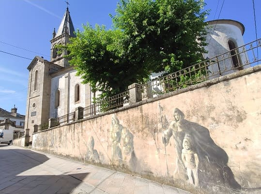
Church of Santa Mariña de Sarria, 12th century.
8
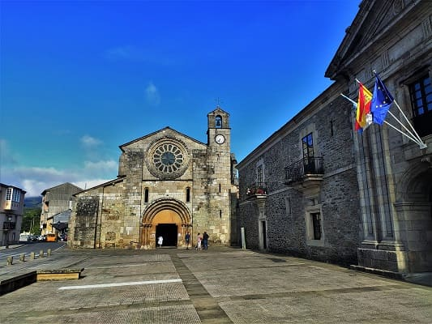
Monastery of Santa María, s.XII.
9
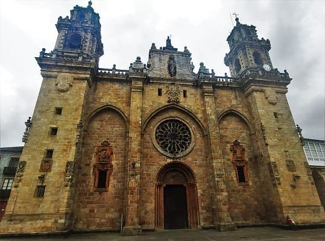
Cathedral and square, 13th century.
10
Día 3, Lugo Alto (CLICK para continuar)
20 de agosto de 2021

![[Valid RSS]](https://www.onepointsync.com/wp-content/uploads/2016/08/valid-rss-rogers.png "Validate my RSS feed")